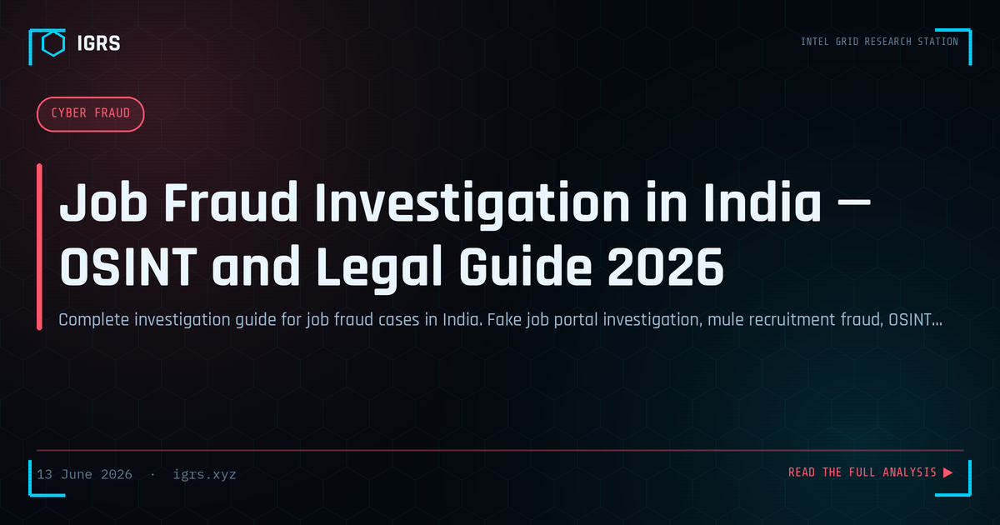

Job Fraud Investigation in India — OSINT and Legal Guide 2026
Job Fraud: A Gateway to Larger Crime
Job fraud in India is far more than a standalone scam — it is a gateway crime that feeds entire cybercrime ecosystems. Fake job offers not only steal registration fees and personal data directly, but also recruit unwitting money mules who power UPI fraud networks. Investigating job fraud therefore often leads to much larger criminal operations. This guide covers the complete methodology for investigating job fraud in India.
Types of Job Fraud in India
| Type | How It Operates |
|---|---|
| Fake MNC jobs | Spoofed company emails demanding registration/processing fees |
| Overseas employment fraud | Fake visa, work permit, and travel for non-existent jobs |
| Part-time task fraud | Pay to unlock tasks that never pay out |
| Mule recruitment | "Receive and forward payments" — unwitting laundering |
| Data entry fraud | Registration fee for work that never materialises |
Company Verification
The first investigative step is verifying whether the offering company is real:
- MCA21 — is the company actually registered? Who are the directors?
- GST verification — does the GSTIN match the claimed entity?
- Domain WHOIS — recent registration is a fraud indicator
- Google search — company name with "scam", "fraud", "complaint"
- LinkedIn — does the company have real, verifiable employees?
Job Portal and Domain Verification
Fraudsters often impersonate legitimate job portals. Verify the original listing on official platforms like Naukri, LinkedIn, and Indeed. Fake portals use lookalike domains such as "naukri-india.com" or "linkedin-jobs.net". Checking the SSL certificate age and domain registration date quickly exposes recently created fraudulent sites.
Recruiter Identity Verification
| Technique | Reveals |
|---|---|
| Email header analysis | Whether email truly originates from the company domain |
| Phone OSINT (Truecaller, TAFCOP) | Recruiter identity and SIM patterns |
| LinkedIn profile analysis | Fake profiles have few connections, recent creation |
| Reverse image search | Stolen profile photos |
The Mule Recruitment Connection
The most valuable investigative insight is that many job fraud operations exist primarily to recruit money mules. Victims responding to "work from home, earn by receiving payments" ads are onboarded as mules whose accounts then receive UPI fraud proceeds. By investigating the job fraud — the Telegram channel, WhatsApp group, or fake company doing the recruiting — investigators reach the organisers of larger financial fraud networks. This pivot transforms a job fraud complaint into a financial crime takedown.
Applicable Legal Sections
| Section | Act | Offence |
|---|---|---|
| Section 318 | BNS 2023 | Cheating |
| Section 319 | BNS 2023 | Personation |
| Section 66D | IT Act 2000 | Personation using computer |
| Sections 3 & 4 | PMLA 2002 | Money laundering (mule recruitment) |
Investigating Overseas Job Fraud
Overseas employment fraud — fake jobs abroad involving visa and travel fraud — has a distinct investigation path. It often involves forged offer letters, fake recruitment agencies, and advance fee fraud. Investigation includes verifying the agency's registration with relevant authorities, checking the legitimacy of visa processes, and reporting to the Ministry of External Affairs where applicable. These cases sometimes connect to human trafficking networks, raising the stakes considerably.
Evidence Collection
Job fraud evidence includes the fraudulent job advertisement, all email and message communications, payment records with UTR numbers, the recruiter's contact details, and the fake company's website and domain data. All electronic evidence requires a Section 63 BSA certificate and hash verification for court admissibility.
Reporting Job Fraud
Victims should report to cybercrime.gov.in and 1930, report the fake listing directly to the platform (Naukri, LinkedIn, Indeed), and for overseas job fraud involving visa fraud, report to the Ministry of External Affairs. Preserving evidence before the fraudster deletes profiles and listings is critical.
Prevention and Awareness
Public awareness defeats job fraud at the source. Key advisories: legitimate employers never demand registration or processing fees; verify the company on MCA21 and GST portals; be suspicious of offers that seem too good or arrive unsolicited; never agree to "receive and forward payments" arrangements, which are money laundering; and verify recruiters through official company channels. Combining this awareness with competent investigation that pivots from job fraud to the larger networks behind it is the most effective response to this pervasive and dangerous crime.